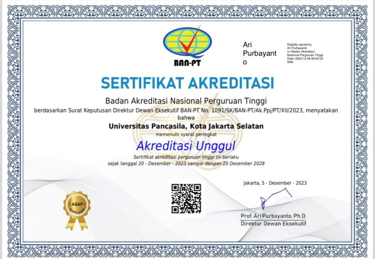

Tentang Kami

Universitas Pancasila membangun mahasiswa untuk memiliki karakter Adaptif terhadap perkembangan IPTEKS dan jaman,
Produktif dalam tugas pokok dan fungsi masing-masing, Inovatif dalam pola fikir manajemen sumberdaya, serta Kontributif
bagi masyarakat, bangsa dan Negara dimanapun insan Universitas Pancasila berkarya.
Pendidikan
Universitas Pancasila memiliki 7 fakultas antara lain :
- Fakultas Ekonomi dan Bisnis
- Fakultas Teknik
- Fakultas Hukum
- Fakultas Farmasi
- Fakultas Ilmu Komunikasi
- Fakultas Psikologi
- Fakutlas Parawisata
Why us ?

Badan Akreditasi Nasional Perguruan Tinggi menetapkan Universitas Pancasila
terakreditasi dengan peringkat Unggul Tahun 2023 - 2028
Alur Pendaftaran Anggota Baru
- Buka situs PMB Universitas Pancasila lewat HP atau laptop
- Buat akun baru menggunakan alamat email Anda.
- Pilih jalur masuk yang diinginkan, seperti CBT (ujian online), Jalur BersinaSr (seleksi rapor), atau Jalur Beasiswa.
- Isi formulir pendaftaran dan data diri secara lengkap.
- Lakukan pembayaran melalui Bank BNI, dan sistem akan mengkonfirmasi secara otomatis.
- Unduh atau cetak kartu peserta setelah proses selesai.
Identitas Kampus
Jenis : Perguruan Tinggi Swasta
Tanggal Berdiri : 28 Oktober 1966
Akreditasi : Unggul dari BAN-PT
Rektor : Prof. Dr. Adnan Hamid, S.H., M.H., M.M
Visi : Menjadi universitas unggul dan terkemuka berlandaskan nilai-nilai luhur Pancasila.